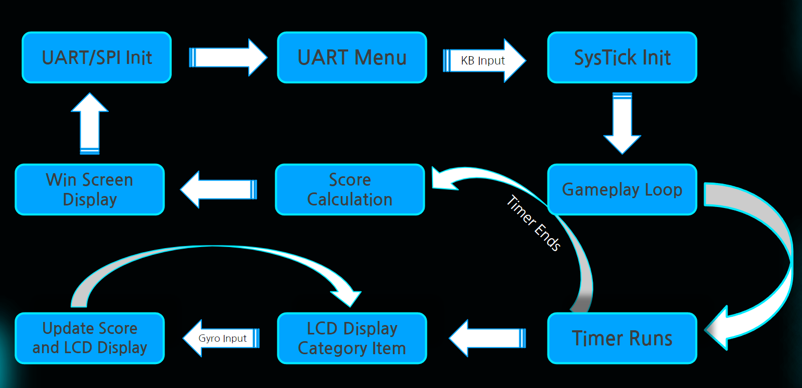

In my Embedded Systems course (which I TA'd for in the spring of 2025), I was tasked with a creative project using the STM32L4 Discovery Kit. My classmate and I decided to recreate the mobile game "Heads Up" using a connection to a desktop computer, the LCD screen on the board, and the onboard gyroscope.
A high level state machine of the project is shown below. The general flow of the project is as follows: On the desktop, a user selects a category. A timer then starts, which counds on the monitor, while the first word is displayed on the LCD screen. The user then has two options: they can tilt the board down to indicate that they guessed the word, or they can tilt the board up to indicate that they want to skip the word. Either way, their input is saved, and the next word is displayed on the LCD screen. The game continues until the timer runs out, at which point the game ends and the user is shown both their score and the words they guessed correctly or skipped.
The project used a number of different communication protocols and components to achieve the desired functionality. The gyroscope was communicated with through SPI, which allowed for fast and efficient data transfer. We were able to communicate with the desktop computer using UART. This allowed us to send and receive not only text data to display on a monitor, but also receive inputs from a keyboard. This allowed the user to pick which category they wanted to play, making the game more interactive.